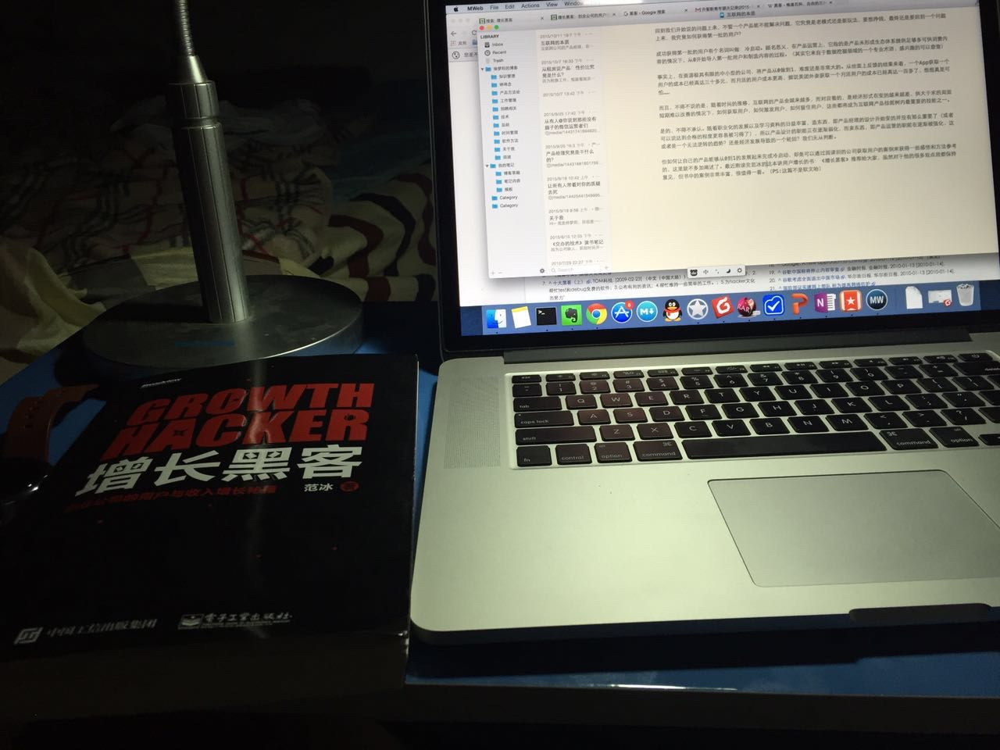

互联网公司的产品经理，在不同公司的职责，都不太一样。而我所理解的产品经理，是进行产品设计，制定产品策略和规范等一系列产品工作，确保产品有商业价值，为产品最终结果负责的人。
而一个产品如果需要有商业价值，不管怎么说，你就得有好的商业模式，如果没有好的商业模式，那就不断的演变，直到，那些不好的商业模式演变成一个好的商业模式。别笑，腾讯，阿里，百度，这些中国互联网上最挣钱的公司，一开始，都是没有一个挣钱的商业模式的。
当然，这一切的前提是：
1、你得有足够的钱保证你在没挣到钱之前不会死掉。
2、你得有足够的用户跟着你玩，才能确保以后他们帮你挣钱。
事实上，互联网就是有这样的魔力，那就是，只要你有足量的用户，资金从来都不会是问题。
对于一个互联网产品，它最重要的是什么？用户
互联网本身没有任何价值，因为它不能提供任何实体的东西。它唯一也是最大的价值就是消除信息的不对称。将服务提供商和消费者之间距离的拉短，互联网的价值所在不是商品，而是服务。那么这两者的区别究竟是什么？
商品是实体，一次性购买，终生不变，比如说，你买了个凳子，交易完成以后，你拥有了凳子，商家有了钱。而服务则是虚拟的和生产无关的服务，比如说你购买了一个保洁服务，保洁来帮你打扫屋子，这一过程中，互联网公司自己本身并没有任何实物。
跟商品不一样的是，商品卖的不好，可以降价出售，而服务，就只有使用和不使用这两种状态了。如果不能帮助用户解决问题，那么，界面做的再华丽，功能做的再多，都不会是一个好的产品。
我将这些外表华丽其实并不能解决问题的互联网产品称之为：华丽的翔
所以产品经理在产品初期验证产品是否能够解决用户问题，这一点非常非常重要。
产品模型的建立与冷启动
事实上，一个产品模型的建立，也没有什么黑科技，无非就是将一些常用流程用信息化的形式固定下来而已，它只是将玩法稍微改了一下，便把传统行业的商家吓得半死，整天如临大敌叫嚷互联网思维。它的本质的过程从来都没有任何变化，仔细思考下，定外卖、订餐、订酒店，它们的基本过程，从来都没有变化过。
如果产品模式是老玩法，就很简单啦，没什么可说的，大家都是抄，那就得比谁抄的快，抄的厉害，谁的资源多。
如果产品模式是新玩法，那就得验证。这个就有意思了，在没真正玩之前，你怎么就那么肯定你的玩法是可以挣到钱的？你怎么就能肯定你真正开始扩张的时候不会因为各种各样的问题挂掉？
所以一般的方法是：快速的弄个部分提供服务的产品（半成品），快速验证（有没有人使用、商业模式是不是靠谱）。如果没有，趁早别玩。如果有，在产品满足市场需求达到PMF(Product Market feed)阶段之后，迅速铺上资源快速推进。
回到我们开始说的问题上来，不管一个产品能不能解决问题，它究竟是老模式还是新玩法，要想挣钱，最终还是要回到一个问题上来，我究竟如何获得第一批的用户？
成功获得第一批的用户有个名词叫做：冷启动。顾名思义，在产品运营上，它指的是产品未形成生态体系提供足够多可供消费内容的情况下，从0开始导入第一批用户和制造内容的过程。（其实它来自于数据挖掘领域的一个专业术语，感兴趣的可以查查）
事实上，在资源极其有限的中小型的公司，将产品从0做到1，难度还是非常大的。从世面上反馈的结果来看，一个App获取一个用户的成本已经高达三十多元，而月活的用户成本更高，据说美团外卖获取一个月活用户的成本已经高达一百多了，想想真是可怕……
而且，不得不说的是，随着时间的推移，互联网的产品会越来越多，而对应着的，是经济形式在变的越来越差，供大于求的局面短期难以改善的情况下，如何获取用户，如何激发用户，如何留住用户，这些都将成为互联网产品技能树内最重要的技能之一。
是的，不得不承认。随着职业化的发展以及学习资料的日益丰富，造东西，即产品经理的设计开始变的并没有那么重要了（或者可以说达到合格的程度更容易被习得了），所以产品设计的职能正在逐渐弱化，而卖东西，即产品运营的职能在逐渐被强化，这或者是一个无法逆转的趋势？还是经济发展导致的一个轮回？我们无从判断。
但如何让自己的产品能够从0到1的发展起来完成冷启动，却是可以通过阅读别的公司获取用户的案例来获得一些感悟和方法参考
，以后可以再单独写一篇自己的经历，这里就不多加阐述了。想要了解更多关于用户增长的书，可以看看我刚读完范冰的这本《增长黑客》（话说我这说话的语气怎么这么像写软文的啊）

这本书里面提取了大量的案例，复盘了这些互联网公司获取用户，到激发用户，最后留住用户的案例，虽然对于他的很多观点我都保持意见，但书中的案例非常丰富，非常值得学习和参考，借此推荐给大家。